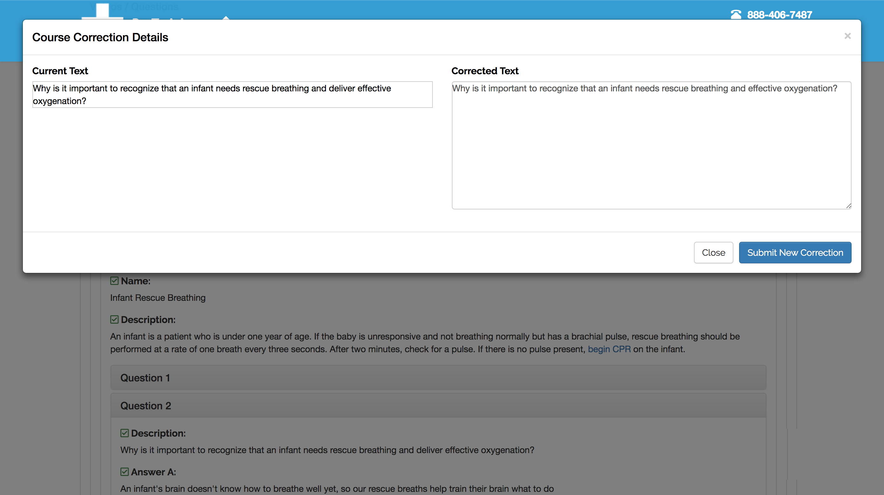

Proofreading System
- Built a proofreading system that is dynamic enough to work for any field on a continuing education course (later adapted to work for normal courses as well)
- Any field can be flagged as incorrect by a proofreader, who fills in the correct version
- The corrected text does not go live until the content expert approves the correction
- If the content expert disagrees, he/she can either delete the correction or modify it and send it back to the proofreader
- Notifications are sent whenever a wording change is suggested
- If a course is in the approval process, it cannot go live until all edits are resolved
